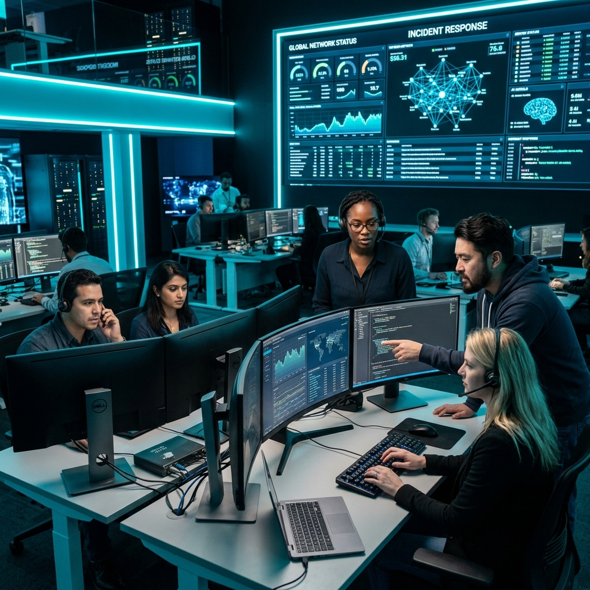
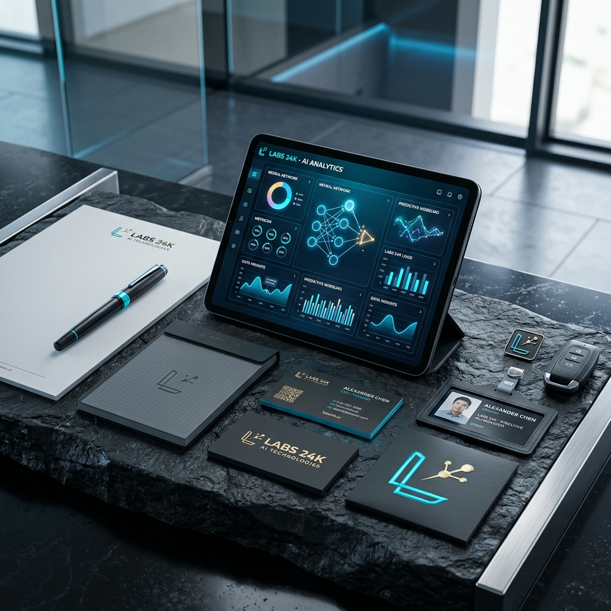

Telecomunicaciones (1996)
- El mundo necesitaba conectarse.
- Negocio basado en tarjetas SIM y terminales.
- Crecimiento vertical del 1.000%.
Oportunidad cerrada
Labs24k es la primera red física de Centros de Inteligencia Artificial. La misma oportunidad que las telecomunicaciones en los 90, pero con el poder de la IA.
12 zonas reservadas en los últimos 30 días.
El manifiesto
La historia se repite. Quienes instalaron la infraestructura de telefonía y fibra en los 90 hoy dominan el mercado.
Labs24k instala la infraestructura del cerebro digital de las empresas globales. El momento de posicionarse es ahora, no cuando el mercado ya esté saturado.
La oportunidad
Oportunidad cerrada
Oportunidad abierta (por tiempo limitado)
Ecosistema blindado
«Nosotros ponemos la tecnología, el marketing y la infraestructura. Tú pones la ambición y los contactos locales. Es la sociedad perfecta del siglo XXI.»
No entregamos una tienda; entregamos un negocio con un sistema operativo propio. El franquiciado no tiene que inventar nada, solo ejecutar.
Tú vendes, nosotros construimos: el mayor miedo del franquiciado es no saber programar.
El franquiciado capta al cliente y realiza el diagnóstico; el equipo central de ingenieros de Labs24k desarrolla la solución IA (agentes, automatizaciones, bots).
El franquiciado se queda con el margen sin tocar una sola línea de código.
Acceso inmediato: librería de soluciones IA ya testeadas en otros sectores (inmobiliario, legal, retail, logística).
Replicabilidad masiva: si un franquiciado en Valencia soluciona un problema a un bufete de abogados, esa solución se sube al marketplace.
Tú puedes vendérsela a los abogados de tu ciudad con un solo clic.
Hemos diseñado un modelo donde el riesgo operativo desaparece, entregando herramientas de corporación global al empresario local.
Blindaje: registro de zona ante notario. Nadie más puede abrir un Labs24k ni vender servicios de la marca en tu radio de acción.
Protección de leads: si un cliente de tu zona contacta con la central, el lead se te deriva automáticamente a ti.
Tráfico centralizado: no te dejamos solo buscando clientes. La central gestiona campañas de Meta y Google Ads segmentadas específicamente para tu código postal.
Volumen constante: recibes en tu CRM una lista diaria de pymes locales interesadas en digitalizarse con IA.
Arquitectura sensorial: mobiliario, iluminación y fragancia corporativa diseñados para cerrar ventas de alto ticket.
Hardware premium: pantallas táctiles de gran formato y estaciones de "demo directa" donde el cliente ve su empresa optimizada por IA en 10 minutos.
Lo llamamos el «Protocolo de Lanzamiento 45 Días». Desde la firma hasta la facturación.
Usamos nuestros algoritmos para encontrar el local con mayor tráfico de empresarios en tu ciudad.
Te entregamos el manual de marca y el contacto de la constructora que monta tu centro en tiempo récord.
Una semana intensiva en la central. No para aprender a programar, sino para aprender a vender IA y gestionar equipos.
Organizamos tu evento de apertura invitando a autoridades y prensa local con invitaciones generadas por nuestra IA.
El modelo de negocio
Para ser el modelo más completo, debemos ofrecer múltiples capas de beneficio simultáneas.
«Combina el margen directo rápido de la implementación, con la estabilidad brutal del canon de mantenimiento mensual. Es el seguro definitivo.»
Beneficio inmediato por cada proyecto cerrado. Integración tecnológica y despliegue rápido.
El cliente paga una cuota mensual por el uso de los servidores e IA de Labs24k. Tú te llevas una comisión cada mes de forma pasiva.
Cobro por horas de formación y asesoramiento premium a ejecutivos locales.
05. El "seguro" Labs24k
Tu éxito es el nuestro. Por eso hemos diseñado un ecosistema de soporte que garantiza que nunca te enfrentes a un reto comercial o técnico en solitario.
Un asistente de IA exclusivo para franquiciados que resuelve dudas sobre presupuestos, objeciones de venta y dudas técnicas al instante, directamente en tu móvil.
Reuniones trimestrales de todos los dueños de zona. Masterminds privados para compartir las estrategias de captación y cierre que mejor están funcionando en el país.

Oportunidades de socio
Descubra por qué Labs 24K es la elección de los inversores que buscan seguridad, escalabilidad y un nicho de mercado líder.
Modelos de consultoría estratégica que transforman la operativa de pymes con IA propietaria.
Digitalización de alto nivel para nichos industriales desatendidos.
Estrategias de crecimiento acelerado basadas en algoritmos de diseño personalizado.

Tu centro Labs 24K
Calculadora de monopolio
Un inversor real no busca un sueldo mensual. Busca construir un activo de alto valor patrimonial. Calcula el valor de reventa de tu licencia a 5 años.
¿Qué porcentaje de las empresas de tu zona vas a captar en 5 años?
Cálculo basado en un múltiplo conservador de 5x sobre EBITDA (60% margen). Este es el capital final estimado al salir del negocio.
IA en vivo
No nos creas a nosotros. Pon a prueba nuestra propia tecnología. Pregúntale a nuestro agente IA interactivo cómo va a transformar los negocios de tu región, cuáles son las condiciones financieras o cuánto se tarda en abrir.
Prueba de concepto
No somos una promesa, somos una realidad probada. Nuestra unidad central ha demostrado la rentabilidad del modelo facturando volúmenes significativos en tiempo récord.
Facturación primeros 6 meses
Garantía de tecnología propia 100% operativa.Margen de producto
ROI proyectado
Capacidad de escalado — clientes corporativos simultáneos por unidad
El factor humano
Detrás tienes a un equipo de expertos en tecnología, estrategia y negocio asegurando tu éxito cada día.
Visión estratégica y liderazgo tecnológico global.
Ingenieros de élite garantizando la operatividad 24/7.
Expertos en cierre de contratos de alto valor institucional.
Transparencia total
Cada euro está destinado a maximizar tu capacidad operativa. Aquí no hay gastos ocultos, solo infraestructura de alto rendimiento.
Inversión llave en mano
«Diseñado para eliminar el miedo al riesgo y asegurar una base financiera sólida desde el día 1.»
Ética y humanismo 2.0
No creemos en la IA como reemplazo, sino como el oxígeno que libera el potencial creativo. Nuestro objetivo es eliminar las tareas repetitivas para que las personas puedan enfocarse en lo que realmente importa: la estrategia y la innovación.
«Lideramos una transición ética hacia una economía donde la inteligencia es el activo más valioso.»
Visión a largo plazo
Expansión global de centros de excelencia.
Integración masiva de IA agéntica en sector público.
Liderazgo en gobernanza de datos y soberanía digital.
Nuevas fronteras: computación cuántica aplicada.
Asegure su posición en la economía del mañana hoy mismo.
Resolviendo dudas
Todo lo que necesitas saber antes de convertirte en socio estratégico de Labs 24K.
El equipo jurídico y técnico de la central prepara la documentación de solvencia, referencias y certificaciones necesarias para que puedas concurrir a licitaciones públicas en tu zona, además de asesorarte en cada pliego relevante para el sector IA.
Accedes al catálogo completo del Marketplace de soluciones: agentes autónomos, automatización RPA, integraciones a medida, IA para pymes y gobernanza de datos, todas ya testeadas en clientes reales de la red.
Sí. Tu demarcación queda registrada ante notario y ningún otro centro Labs24k puede operar ni comercializar servicios de la marca dentro de tu radio de acción, licitaciones incluidas.
El contrato de licencia tiene una duración inicial de 5 años, renovable, sujeto al cumplimiento de los estándares operativos y de marca definidos por el comité de expansión.
Soporte 24/7 a través del Conserje IA, un consultor de zona asignado, acceso a la comunidad trimestral de líderes y al equipo central de más de 200 ingenieros para cada implementación.
No. Buscamos perfiles con visión empresarial y contactos locales, no técnicos. Toda la ingeniería la ejecuta la central; tú te formas en venta, diagnóstico y gestión de equipo durante la semana "Founder Level".
El filtro
Labs24k solo otorga una licencia por demarcación territorial. Buscamos perfiles con visión empresarial, no necesariamente técnicos. Si cumples los requisitos, te entregamos el monopolio de la IA en tu ciudad.
Bloqueo territorial inmediato tras la firma del acuerdo.
Las solicitudes aprobadas pasan a entrevista con Dirección General.
Conexión cifrada. Cualificación confidencial gestionada bajo estricta reserva de información.
Tu candidatura entra ahora en proceso de cualificación. El comité de expansión revisará tu perfil y Dirección General se pondrá en contacto contigo muy pronto.
Recibe tu agencia de IA y desarrollo con todo el material de papelería, acceso a contratos públicos, formación constante y sistemas listos para facturar a cualquier nivel desde el primer día.
Solicitar dossier informativo